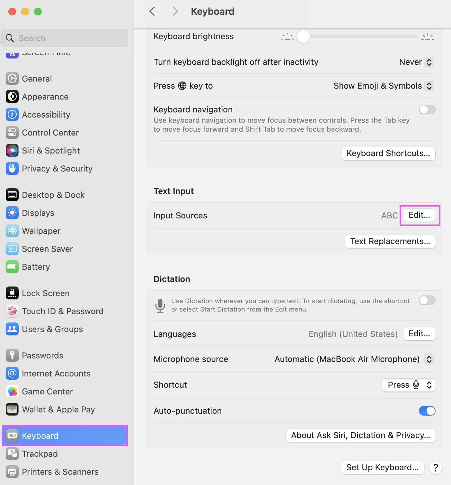
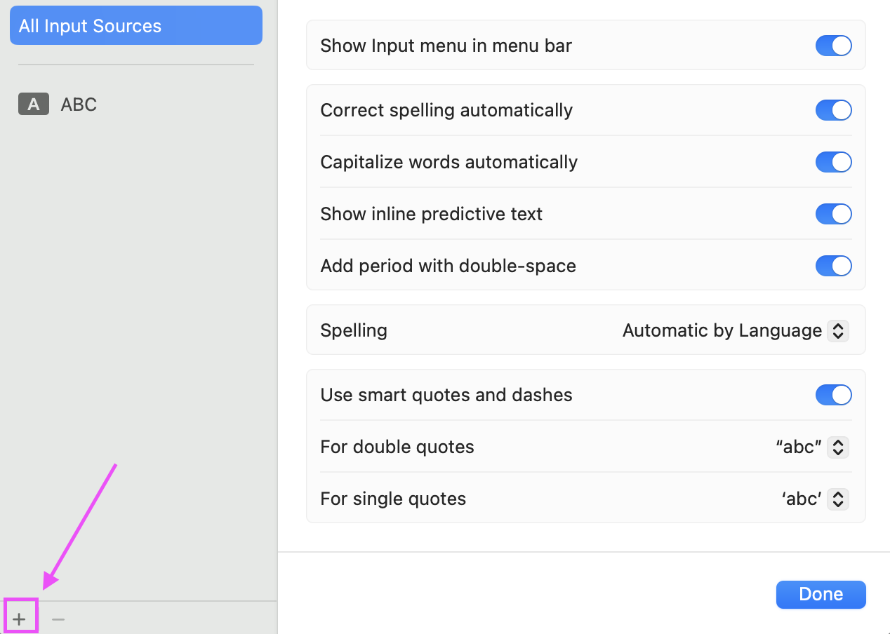
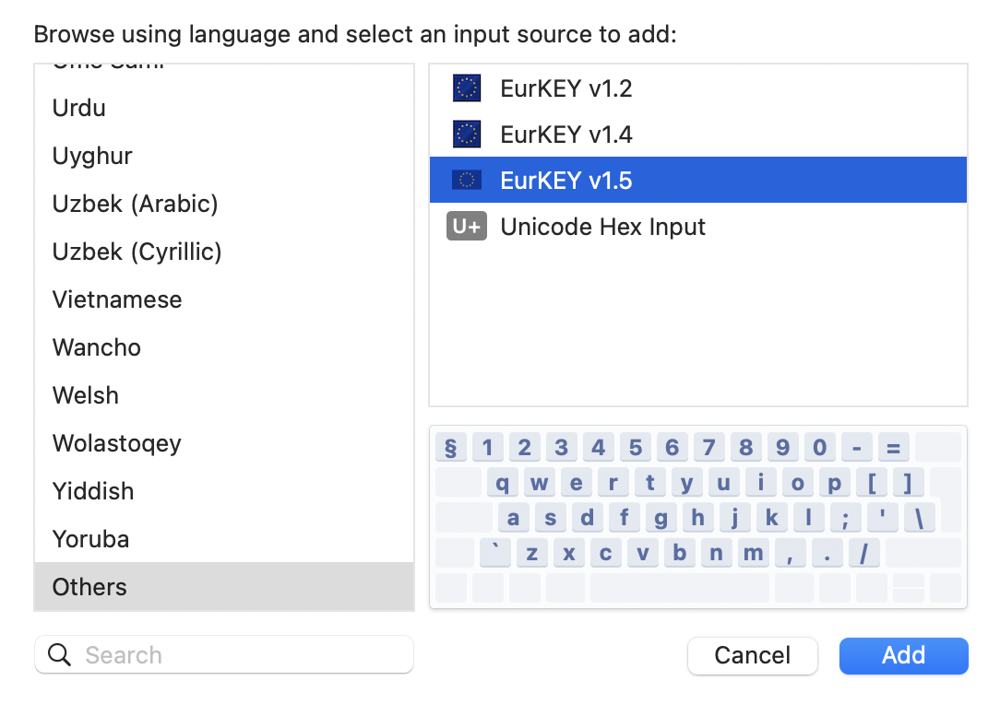
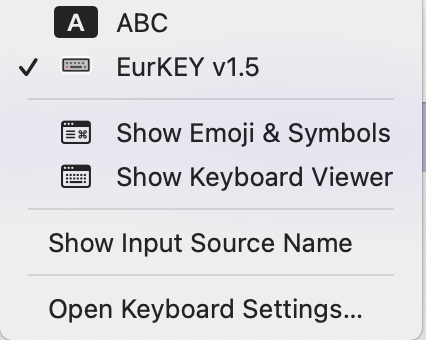

The complete key map for each version, showing all modifier layers and dead key compositions.
Type accented characters (ä, é, ñ, č, …) using intuitive Option-key combinations. No character palette needed.
Built for the physical English International keyboard found on European MacBooks — with the extra § key and big Enter.
Ships v1.2, v1.3, v1.4, and v2.0 in a single bundle. Pick the one that fits your workflow.
Download the DMG, drag the bundle to Keyboard Layouts, log out. Done in under a minute.
Get the latest .dmg from GitHub Releases. Open it and drag EurKey-macOS.bundle to the Keyboard Layouts folder.
Log out and back in (or restart) so macOS picks up the new layout.
Open System Settings → Keyboard → Input Sources. Click Edit…, then + to add a new input source. Search for "EurKEY" and select the version you want.



Click the input source icon in the menu bar and switch to EurKEY.
